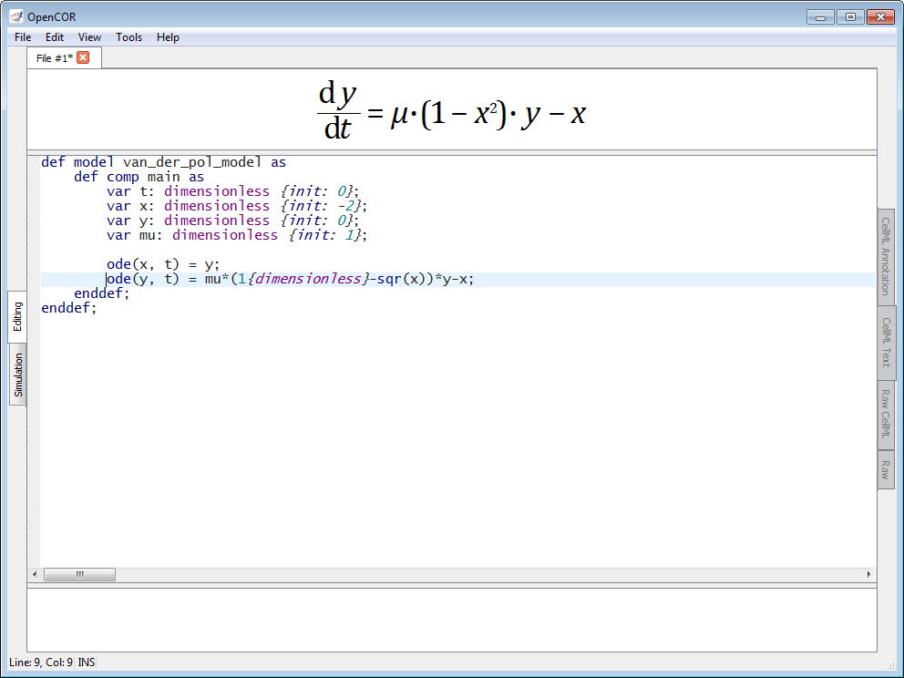
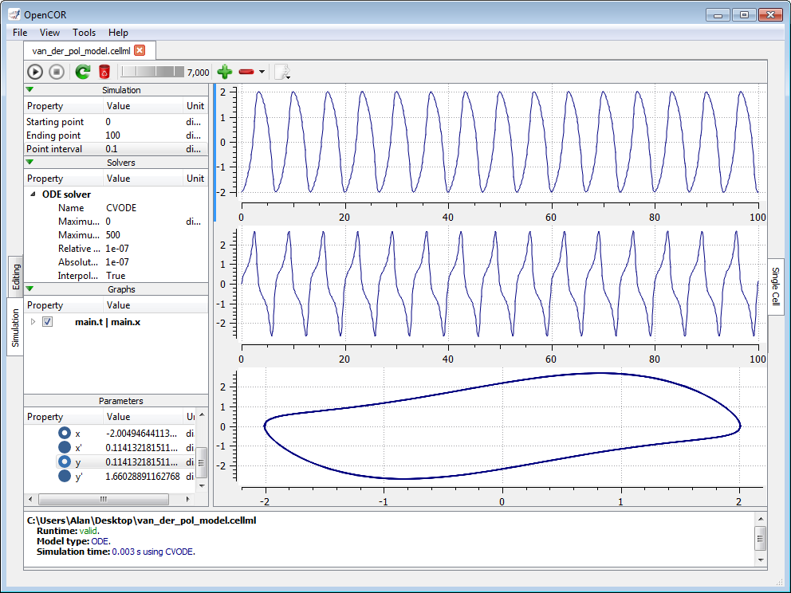
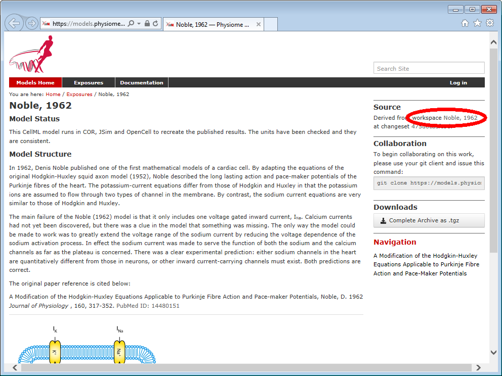
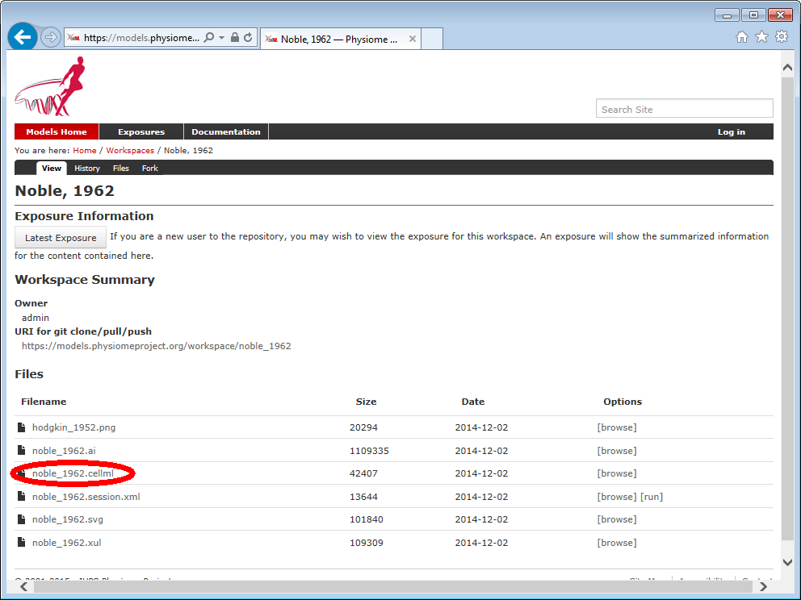
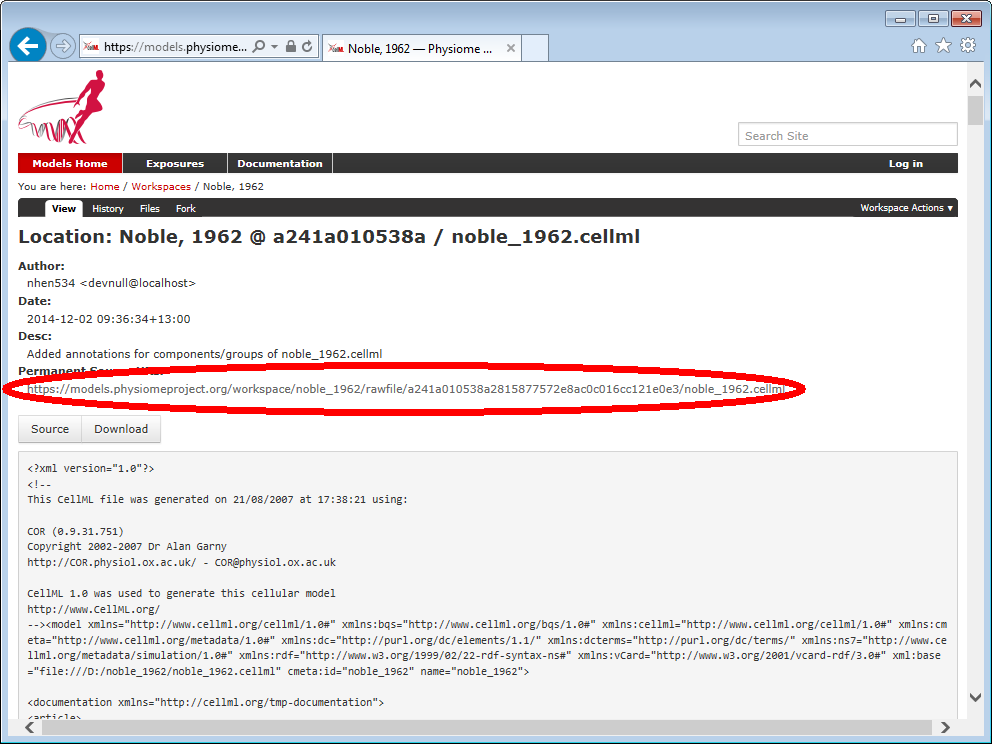

To get you sarted with OpenCOR, we show you how to install and run the software, and how to author and edit models. We start by creating a simple model from scratch, saving it as a CellML file and running model simulations. We next try opening existing CellML files, both from a local directory and from the Physiome Model Repository.
[OpenCOR]/OpenCOR.vbs (or [OpenCOR]/bin/OpenCOR.exe) on Windows, [OpenCOR]/bin/OpenCOR on Linux or [OpenCOR]/OpenCOR on OS X. A window will appear that looks like:
View | Windows menu, or by selecting the Tools | Reset All menu. To click on Ctrl+Space (on Windows and Linux) or on Alt+Space (on OS X) removes (for less clutter) or restores those side windows.

In this example, we create a simple model from scratch and run it. The model is the Van der Pol oscillator defined by the second-order equation: $$\frac{d^2 x}{dt^2}-\mu(1-x^2)\frac{dx}{dt}+x=0$$ with initial conditions $x=-2$ and $\frac{dx}{dt}=0$. The parameter $\mu$ controls the magnitude of the damping term. To create a CellML file, we need to convert the second-order equation to two first-order equations by defining the velocity $\frac{dx}{dt}$ as a new variable $y$: $$\frac{dx}{dt}=y$$ $$\frac{dy}{dt}=\mu(1-x^2)y-x$$ The initial conditions are now $x=-2$ and $y=0$.
Now, before we can actually create a CellML file for that model, we need to ensure that we are in Editing mode and that the CellML Text view is selected. To do this, make sure that the Editing tab on the left hand edge of the central area is selected, and the same with the CellML Text tab on the right hand edge of the central area.
Being in the correct mode and view, we can now create a CellML file for the above system of ordinary differential equations (ODEs). Under the File | New menu, select CellML 1.0 File and type in the following lines of code:
def model van_der_pol_model as def comp main as var t: dimensionless {init: 0}; var x: dimensionless {init: -2}; var y: dimensionless {init: 0}; var mu: dimensionless {init: 1}; ode(x, t) = y; ode(y, t) = mu*(1{dimensionless}-sqr(x))*y-x; enddef; enddef;
Things to note are: (i) the closing semicolon at the end of each line (apart from the first two def statements that are opening a CellML construct), (ii) the need to indicate dimensions for each variable and constant (all dimensionless in this example), (iii) the use of ode(x,t) to indicate a first-order ODE in x and t, and (iv) the use of the convenient squaring function sqr(x) for $x^2$ (a full list of mathematical operators, elements and constants supported by the CellML Text format can be found here).
To move the cursor over either of the ODEs renders the mathematics in standard form above the code:

Save the model using Save under the File menu (or press Ctrl+S on Windows and Linux, or Command+S on OS X) and choosing .cellml as the file format (.cellml is not strictly required but is best practice). With the model saved, all the editing views become available. One is the CellML Text view (the view used to enter the code above). Another is the Raw CellML view that displays the way the model is stored (note that positioning the cursor over part of the code shows the mathematics in this view also), and another is the Raw Text view that can be used to edit any text-based file.
With the equations and initial conditions defined, we are ready to run the model. To do this, click on the Simulation tab on the left hand edge of the central area. You will see three main areas - at the left hand side of the view are the Simulation, Solvers, Graphs and Parameters panels. At the right hand side is the graph panel, and running along the bottom of the view is a status area, where status messages are displayed.
This area is used to set up the simulation settings:
0.100.0.1.Just above the Simulation panel are controls for running the simulation. These are:
|
|
Run the simulation |
|---|---|
|
|
Pause the simulation |
|
|
Stop the simulation |
|
|
Reset all the model parameters |
|
|
Clear the simulation data |
|
|
Add a graph panel |
|
|
Remove the current graph panel or all the graph panels |
|
|
Export the simulation data |
The wheel between the  and
and  buttons can also be used to get some delay between the rendering of two data points.
buttons can also be used to get some delay between the rendering of two data points.
For this model, we suggest that you create three graph panels using the  button.
button.
This area is used to configure the solver that will run the simulation:
These can all be left at their default values for our simple model (note that a model that requires a stimulus protocol should have the maximum step value of the CVODE/IDA solver set to the length of the stimulus, while the maximum number of steps might have to be increased in case of a stiff model).
This shows what parameters are being plotted once these have been defined in the Graphs or Parameters panel. These can be selected/deselected by clicking in the box next to a parameter.
This panel lists all the model parameters, and allows you to select one or more to plot against the variable of integration or another parameter in the graph panels. OpenCOR supports graphing of any parameter against any other. All variables from the model are listed here, arranged by the components in which they appear, and in alphabetical order. Parameters are displayed with their variable name, their value, and their units. Right clicking on a parameter provides the options for displaying that parameter in the currently selected graph panel. With the cursor highlighting the top graph panel (a blue line appears next to it), select $x$ then the variable of integration $t$ in order to plot $x(t)$. Now, move the cursor to the second graph panel and select $y$ then $t$ to plot $y(t)$. Finally, select the bottom graph panel and select $y$ then $x$ to plot $y(x)$.
Now, click on the  button. You will see a progress bar running along the bottom of the status window. Status messages about the successful simulation will be displayed. Use the simulation delay wheel to slow down the plotting.
button. You will see a progress bar running along the bottom of the status window. Status messages about the successful simulation will be displayed. Use the simulation delay wheel to slow down the plotting.

Go to the File menu and select Open.... Browse to the folder containing CellML files and select one. Note that this brings up a new tabbed window and that you can have any number of CellML files open at the same time, in order to quickly move between them. A CellML file can be closed by clicking on the close button in the corresponding file tab, or by selecting the File | Close menu or by pressing Ctrl+W (on Windows and Linux) or Command+W (on OS X).
You can also access CellML files from the left hand windows. If those windows are not currently visible, use Ctrl+Space (on Windows and Linux) or Alt+Space (on OS X) to make them reappear (or use the View | Windows menu). CellML files can then be accessed from any one of those three windows – Physiome Model Repository, File Browser or File Organiser. For a CellML file under the File Browser or File Organiser window, either double click it or 'drag and drop' it over the central area to open it.
To click on a model in the Physiome Model Repository window opens a new browser window with the latest published exposure for that model. To open this model in OpenCOR, you need to retrieve the URI of the corresponding CellML file and copy it into the text box that appears when selecting Open Remote... in the File menu. For example, to click on the Noble, 1962 link in the Physiome Model Repository window opens the following page in your browser:

The workspace for that exposure is:

We want the URI of the CellML file that describes the Noble 1962 model, so we need to click on the noble_1962.cellml link:

That last page contains the URI of the CellML file we are after: https://models.physiomeproject.org/workspace/noble_1962/rawfile/a241a010538a2815877572e8ac0c016cc121e0e3/noble_1962.cellml.